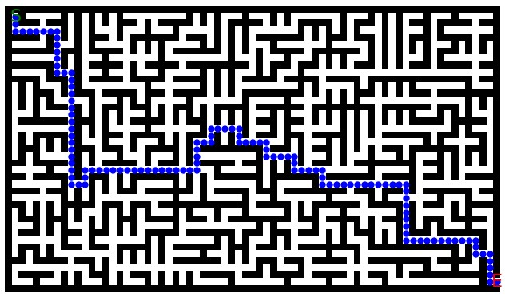

Project 5: Q-Table Reinforcement Learning Maze Solver
Maze Builder
- Generates mazes according to specific parameters (width, height, start and goal position).
- Provides a CLI (Command Line Interface) to modify default parameters for flexible usage.
- Allows the user to generate multiple mazes with the same parameters (mazes will be different).
- Generates and saves each maze as a JSON file containing the maze grid and parameters (size and start/goal position).
- Saves the maze as a png including start and endpoint as well as a path solving the maze.
This is an example for a maze created by the tool:
The code was built with python using mazelib and matplotlib.
import os
from mazelib import Maze
from mazelib.generate.Prims import Prims
import json
import re
import matplotlib.pyplot as plt
import numpy as np
from collections import deque
# Function to find the next available number for the file name
def get_next_file_number(output_folder, file_name):
os.makedirs(output_folder, exist_ok=True)
existing_files = os.listdir(output_folder)
pattern = re.compile(f"{re.escape(file_name)}_(\\d+)\\.json")
existing_numbers = [
int(match.group(1))
for f in existing_files
if (match := pattern.match(f))
]
return max(existing_numbers, default=0) + 1
# Function to create the maze
def create_maze(maze_width, maze_height, start, goal, output_folder, file_name, file_number):
maze = Maze()
maze.generator = Prims(maze_width, maze_height)
maze.generate()
maze_grid = maze.grid.tolist()
# Ensure the start and goal cells are open
maze_grid[start[0]][start[1]] = 0
maze_grid[goal[0]][goal[1]] = 0
# If there's no path between start and goal, carve one directly
if not is_path_exist(maze_grid, start, goal):
carve_path(maze_grid, start, goal)
# Save the maze as JSON
file_path = os.path.join(output_folder, f"{file_name}_{file_number}.json")
maze_data = {
"maze": maze_grid,
"width": maze_width * 2 + 1,
"height": maze_height * 2 + 1,
"start": start,
"goal": goal,
}
with open(file_path, "w") as f:
json.dump(maze_data, f, indent=4)
print(f"Maze created and saved to {file_path}")
# Print the maze to the console with coordinates
print_maze_with_coordinates(maze_grid, start, goal)
# Return the generated maze grid (for image creation)
return maze_grid
# Function to check if a path exists between start and goal
def is_path_exist(maze, start, goal):
rows, cols = len(maze), len(maze[0])
visited = [[False] * cols for _ in range(rows)]
queue = deque([start])
visited[start[0]][start[1]] = True # Mark start as visited
directions = [(0, 1), (1, 0), (0, -1), (-1, 0)] # Right, down, left, up
while queue:
x, y = queue.popleft()
if (x, y) == goal:
return True
for dx, dy in directions:
nx, ny = x + dx, y + dy
if 0 <= nx < rows and 0 <= ny < cols and maze[nx][ny] == 0 and not visited[nx][ny]:
visited[nx][ny] = True
queue.append((nx, ny))
return False
# Function to carve a direct path from start to goal
def carve_path(maze, start, goal):
x1, y1 = start
x2, y2 = goal
# Carve a direct horizontal and vertical path
for x in range(min(x1, x2), max(x1, x2) + 1):
maze[x][y1] = 0
for y in range(min(y1, y2), max(y1, y2) + 1):
maze[x2][y] = 0
# Function to create the maze image with the path overlay
def create_maze_image(maze, start, goal, output_folder, file_name, file_number):
maze_array = np.array(maze)
cmap = plt.cm.binary
plt.figure(figsize=(8, 8))
plt.imshow(maze_array, cmap=cmap, origin="upper")
plt.text(
start[1], start[0], "S", color="green", ha="center", va="center", fontsize=16
)
plt.text(
goal[1], goal[0], "E", color="red", ha="center", va="center", fontsize=16
)
# Get the path to overlay on the maze image
path = create_path_in_image(maze, start, goal)
for x, y in path:
plt.plot(y, x, marker="o", color="blue", markersize=5)
plt.axis("off")
# Save the created image
image_path = os.path.join(output_folder, f"{file_name}_{file_number}.png")
plt.savefig(image_path, bbox_inches="tight")
print(f"Maze image created and saved to {image_path}")
plt.close()
# Function to find the path from start to goal and return it for image overlay
def create_path_in_image(maze, start, goal):
rows, cols = len(maze), len(maze[0])
visited = [[False] * cols for _ in range(rows)]
parent = {}
queue = deque([start])
visited[start[0]][start[1]] = True # Mark start as visited
directions = [(0, 1), (1, 0), (0, -1), (-1, 0)]
while queue:
x, y = queue.popleft()
if (x, y) == goal:
break
for dx, dy in directions:
nx, ny = x + dx, y + dy
if 0 <= nx < rows and 0 <= ny < cols and maze[nx][ny] == 0 and not visited[nx][ny]:
visited[nx][ny] = True
parent[(nx, ny)] = (x, y)
queue.append((nx, ny))
path = []
current = goal
if current not in parent and current != start:
print("No path found from start to goal!")
return path
while current != start:
path.append(current)
current = parent[current]
path.append(start)
path.reverse() # So that the path goes from start to goal
return path
# Function to print the maze with coordinates and markers for start and goal
def print_maze_with_coordinates(maze, start, goal):
maze_copy = [row[:] for row in maze] # Create a copy to avoid modifying the original maze
maze_copy[start[0]][start[1]] = 'S' # Mark the start position
maze_copy[goal[0]][goal[1]] = 'E' # Mark the goal position
print("\nGenerated Maze:")
for i, row in enumerate(maze_copy):
formatted_row = ' '.join(f'{cell:2}' for cell in row)
print(f"{i:2} {formatted_row}")
print(f"Start: {start}, Goal: {goal}\n")
# Main script
if __name__ == "__main__":
# Variables and default values
file_number = 0
output_folder = "mazes"
file_name = "maze"
maze_width_default = 25
maze_height_default = 25
start_default = (1, 1)
goal_default = (2 * maze_width_default - 1, 2 * maze_height_default - 1)
number_of_mazes_default = 1
# User inputs for maze dimensions and count
maze_width_input = input(f"Provide the maze width (default={maze_width_default}): ").strip()
maze_width = int(maze_width_input) if maze_width_input else maze_width_default
maze_height_input = input(f"Provide the maze height (default={maze_height_default}): ").strip()
maze_height = int(maze_height_input) if maze_height_input else maze_height_default
number_of_mazes_input = input(f"Provide the number of mazes you want to create (default={number_of_mazes_default}): ").strip()
number_of_mazes = int(number_of_mazes_input) if number_of_mazes_input else number_of_mazes_default
# User inputs for start and goal positions
start_input = input(
f"Provide the start position as two numbers separated by a comma (e.g., 0,0). This is where the maze will begin. Default={start_default}: "
).strip()
start = tuple(map(int, start_input.split(","))) if start_input else start_default
goal_input = input(
f"Provide the goal position as two numbers separated by a comma (e.g., x,y). Default=({2 * maze_width - 1}, {2 * maze_height -1}): "
).strip()
try:
goal = tuple(map(int, goal_input.split(","))) if goal_input else (2 * maze_width - 1, 2 * maze_height - 1)
except ValueError:
print("Invalid input. Goal must be two numbers separated by a comma. Using default value.")
goal = (2 * maze_width - 1, 2 * maze_height - 1)
# Validate that the start and goal coordinates are within the maze bounds
maze_rows = maze_height * 2 + 1
maze_cols = maze_width * 2 + 1
if not (0 <= start[0] < maze_rows and 0 <= start[1] < maze_cols):
print(f"Start coordinates {start} are out of bounds. Using default start: {start_default}.")
start = start_default
if not (0 <= goal[0] < maze_rows and 0 <= goal[1] < maze_cols):
default_goal = (2 * maze_width - 1, 2 * maze_height - 1)
print(f"Goal coordinates {goal} are out of bounds. Using default goal: {default_goal}.")
goal = default_goal
# Maze creation loop
for _ in range(number_of_mazes):
file_number = get_next_file_number(output_folder, file_name)
maze_grid = create_maze(maze_width, maze_height, start, goal, output_folder, file_name, file_number)
create_maze_image(maze_grid, start, goal, output_folder, file_name, file_number)